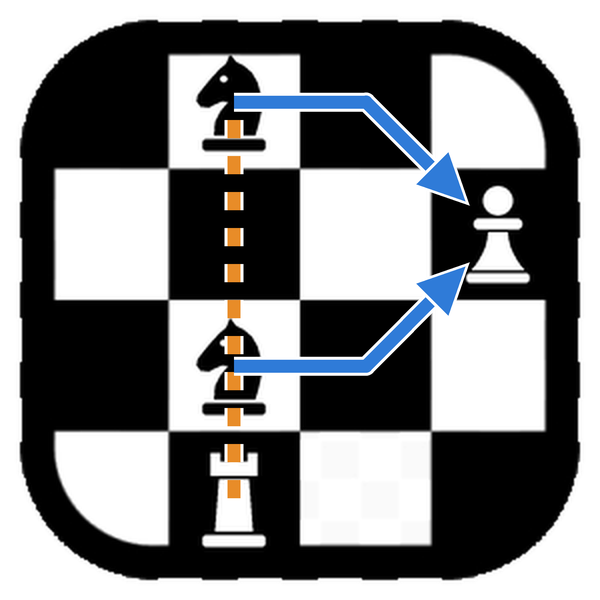

У Pragma Chess есть официальный логотип. На первый взгляд это угол шахматной доски, шестнадцать полей и четыре фигуры: два коня, пешка и ладья. Но если посмотреть на него глазами шахматиста, это буква — P из слова Pragma. Она нигде не нарисована, и эта статья рассказывает, где она прячется и как мы к ней пришли.
Логотипом Pragma Chess всегда была доска: четыре поля на четыре, белые и чёрные, в рамке со скруглёнными углами. Это значок, который вы видите на панели задач и на рабочем столе, и он работает, потому что прост: его узнаёшь даже в шестнадцати пикселях, когда от любого рисунка остаётся немногим больше пятна.
Первая идея была написать P из Pragma фигурами. Семь пешек на полях: вертикальная черта на одной вертикали и петля на трёх верхних горизонталях. Каждая пешка — негатив своего поля: белая на тёмных полях и чёрная на светлых.
Вблизи это работало, в малом размере — нет. В тридцати двух пикселях пешка превращается в точку, и буква теряется на пёстрой доске. Мы остановились на двух вариантах: простой, чистая доска, остаётся значком программы в любом размере; богатый появляется там, где есть место его прочитать, — в окне приветствия и на этом сайте.
Та попытка оставила и правило: главное — сетка. Каждая фигура стоит в центре своего поля целиком, даже там, где часть поля закрыта рамкой. Где фигура заходит на чёрную рамку, она становится своим негативом и белеет. Посмотрите на основание ладьи: это первый сюрприз, и его почти никто не замечает.
Потом пришёл правильный вопрос: а что, если букву P не рисовать, а описать? Семь пешек уступили место четырём фигурам, и буква стала путём их ходов.

Это верхний угол доски, от вертикали b до вертикали e. Об этом говорят цвета полей: левое верхнее поле, b8, тёмное, как на настоящей доске. Кони стоят на c8 и c6, пешка на e7, ладья на c5.
Петля. Оба коня могут взять пешку на e7. Прыжок коня когда-то описывали именно так: один шаг ладьи и один шаг слона. Конь с c8 делает шаг ладьи на d8 и шаг слона на e7; конь с c6 — шаг ладьи на d6 и шаг слона на e7. Два пути смыкаются на пешке и рисуют петлю буквы P.
Вертикальная черта. Ладья на c5 не может подняться по вертикали: путь ей преграждает собственный конь на c6. Но ладье не нужно ходить, чтобы иметь значение: она смотрит вдоль вертикали сквозь коня, рентгеном, и созданное ею напряжение уже само по себе угроза. Когда конь с c6 прыгает на e7, чтобы взять пешку, вертикаль открывается, и линия ладьи доходит до c8. Это и есть вертикальная черта буквы P.
Один и тот же ход рисует петлю и освобождает черту: вся буква складывается в одно мгновение, как при вскрытом нападении.
Буквы P нет на доске: она в ходах. Тот, кто не играет, видит четыре фигуры; шахматист видит двух коней, нацеленных на одну пешку, ладью, затаившуюся за своей фигурой, а затем и букву. Логотип дополняет знание того, кто на него смотрит.
Он нравится нам, потому что рассказывает о том, что старается делать Pragma Chess: смотреть на позицию и понимать, что делают фигуры. Именно это делает функция «Объяснить», рисуя на доске стрелки, которые обосновывают оценку, — такие же, как на картинке выше.
Богатый логотип вы найдёте в окне приветствия Pragma Chess и на этом сайте; значком программы остаётся простая доска, которая лучше читается в малом размере. Если вы прочитали букву раньше, чем дошли до конца статьи, — браво: логотип был сделан для вас.